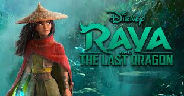
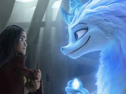

Raya the last dragon

Cast : Raya The last dragon
"RAYA"
"CHEIF BENJA"

"SISU"
"LITTLE NOI"

"NAMAARI"
"TUK TUK"
"TONG"
"BONU"
The Story : Raya The last dragon
In Raya and the Last Dragon, the story is set in the fantasy world of Kumandra, where humans and dragons once lived in harmony. However, a sinister force known as the Druun, which turns living beings into stone, threatened the land. The dragons sacrificed themselves to save humanity, leaving behind a magical gem that kept the Druun at bay. Over time, the people of Kumandra became divided into five factions: Heart, Fang, Spine, Talon, and Tail.
The story follows Raya, the princess of Heart, who is being trained by her father, Chief Benja, to protect the dragon gem. He dreams of uniting the fractured lands. However, during a peace summit between the tribes, Namaari, the princess of Fang, deceives Raya, leading to the gem’s shattering. This releases the Druun once more, and the different tribes each take a piece of the gem for themselves, hoping it will protect them. Raya’s father is turned to stone, and she sets off on a quest to find the last dragon, Sisu, who might be able to restore the gem and defeat the Druun.
Six years later, Raya locates Sisu in a remote river. Sisu reveals that while she is powerful, it was actually her siblings who created the dragon gem. Together, they embark on a journey to retrieve the broken pieces from the different tribes. As they travel, they form a team of unlikely allies: Boun, a young boat captain; Little Noi, a baby con artist; and Tong, a fierce warrior. Each of them has suffered personal loss due to the Druun, and they all seek to restore their loved ones.
The group faces challenges along the way, especially from Namaari, who is also hunting for the pieces. As tensions rise, it becomes clear that trust is the key to solving the conflict. However, Raya struggles to trust Namaari after her betrayal. Eventually, they collect all the pieces of the gem, but a final confrontation with Namaari results in the Druun attacking once more, and Raya's friends begin to turn to stone. Realizing that they must unite and trust one another, Raya and the others hand over their gem pieces to Namaari, allowing her to reassemble the gem and restore peace.
In the end, the Druun are defeated, and all those turned to stone, including the dragons, are revived. Kumandra is reunited as a single, harmonious land, and Raya is reunited with her father. The story emphasizes themes of trust, unity, and forgiveness, as Raya learns that true strength lies not in weapons or power, but in believing in others.